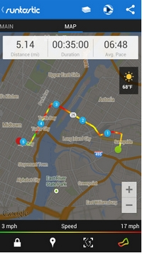
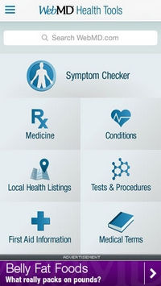

Une application bien centrée
Lors de sa navigation sur un site Internet, qu'il soit orienté ordinateur ou mobile, l'internaute va se concentrer sur le sujet abordé. Il ne doit pas être dérangé dans sa navigation ou sa lecture par des publicités ou des annonces qui prennent trop de place. Les concepteurs se sont adaptés à cela, en imposant des endroits obligatoires et prédéfinis pour les publicités et les partenariats sur les site orientés ordinateur.
Sur les applications orientées mobiles, il n'est pas possible de placer des diverstissements de la sorte. L'écran est plus petit que celui d'un ordinateur, ce qui oblige les programmateurs a prévoir une autre manière de mettre l'application en page. Elle ne doit pas être polluée par des publicités ou des annonces placées sur le côté de la page. Il faut une application ou un site entièrement centré sur le sujet abordé.
Runtastic Pro
 Runtastic Pro est une application de géolocalisation. Elle permet de trouver des itinéraires, des lieux, et indique même la météo sur le côté droit de l'écran. C'est une applicaition qui respecte ce critère car l'écran est entièrement dédié à elle. L'utilisateur n'est pas dérangé par des publicités ou des annonces qui pourraient venir polluer sa navigation. Il n'a que l'application sous les yeux, ce qui lui permet une meilleure concentration et également un gain de temps. Car si l'esprit est obligé de se tourner vers deux contenus en même temps, le temps de navigation sera rallongé. Ici, ce n'est pas le cas, l'application occupant tout l'écran.
WebMD Health Tools
 WebMD Health Tools est une application pour Android à but médical. Elle est bien travaillée au niveau du design, cependant un bandeau de publicité sur le bas attire l'oeil. Cette publicité, d'une couleur plus vive que l'application elle-même, peut déranger certains utilisateurs. Il est difficile de ne pas y faire attention et le regarde se porte facilement dessus. Étant donné qu'elle diffère grandement de l'application au niveau graphique, l'internaute peut se demander de quoi il s'agit et être gêné par sa présence pendant sa navigation. Il aurait fallut, si la publicité est réellement indispensable, utiliser une couleur moins vive.